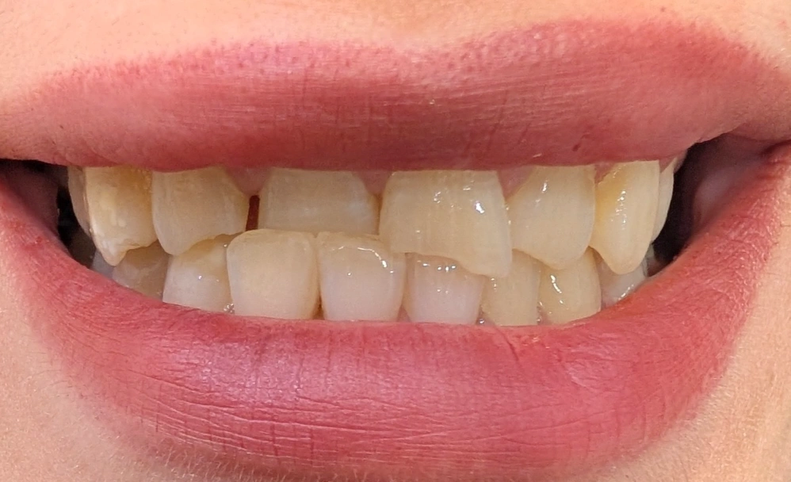

Chairside 19
وقتی دندانِ مقابل، فضای بازسازی را اشغال میکند

بیمار با سابقهی ترومای ناحیهی قدامیِ ماگزیلا — چند ماه پیش — مراجعه کرد. آن ضربه باعث شده بود بخشی از دندانها غیرقابلِ نگهداری شوند؛ از جمله سانترالِ راستِ بالا که ریشهاش بر اثرِ ضربه از استخوان خارج شده و اندیکاسیونِ کشیدن دارد. اما علتِ اصلیِ مراجعهی امروز چیزِ دیگری بود: تعیینِ تکلیفِ زیباییِ سانترالِ چپِ بالا.
سانترالِ چپِ بالا شکسته بود. نکتهای که کیس را پیچیده میکرد، دندانِ قدامیِ پایینِ مقابل بود: با از دست رفتنِ آنتاگونیست، سوپرااراپت شده و وارد فضای شکستگی و فضای رستوریتیو شده بود — یعنی بخشی از فضای لازم برای بازسازیِ سانترالِ بالا را اشغال کرده بود.
این سوپرااراپشن از نوعِ دنتوآلوئولار بود (دندان همراه با استخوان و لثه بالا آمده)، و چون در بازهی چندماهه اتفاق افتاده، یک فرایندِ فعال است، نه وضعیتی تثبیتشده. خودِ همین حرکت ثابت میکند که دندانِ پایین vital است، با PDL فعال و بدونِ انکیلوز.
قدمِ اول، مشاوره برای اینتروژنِ قدامیهای پایین بود. متخصصِ ارتو این مسیر را رد کرد؛ استدلالش این بود که اینتروژن با مکانیکِ استانداردِ پیوسته منوط به عمیق بودنِ قوسِ اسپی است و در این کیس این شرط فراهم نیست. اینتروژنِ absolute با مینیاسکرو بهعنوان یک مسیرِ فنیِ ممکن باقی میماند، ولی فعلاً دنبال نشد.
چون مقدارِ سوپرااراپشن کم است، مسیر از ارتو به سمتِ یک اصلاحِ رستوریتیوِ مینیمال تغییر کرد. گزینههای تهاجمیتر — دویتالایز کردن یا کشیدنِ دندانِ پایین — بررسی و کنار گذاشته شدند، چون شدتِ کیس آنها را توجیه نمیکند.
راهحلِ انتخابی، تقسیمِ اصلاح بین دو قوس است: انامِلوپلاستیِ مختصرِ قدامیهای پایین، بهعلاوهی کمی کوتاهتر ساختنِ سانترالِ بالا (در حدِ نیم میلیمتر). موقعیتِ لبهی اینسایزالِ سانترال بر اساسِ دیسپلی در حالتِ rest تعیین شد و قرار است با فونتیک (F/V) و دیسپلیِ لبخند هم تأیید شود.
روندِ پیشروی به سمتِ پلنِ نهایی به این ترتیب است:
- کشیدنِ دندانهای غیرقابلِ نگهداری (سانترالِ راستِ بالا و مواردِ مشابه).
- ایجادِ فضای رستوریتیو از طریقِ همین اصلاحِ مینیمالِ دوقوسی.
- ستکردنِ موقعیتِ لبهی اینسایزالِ ماگزیلا (زیبایی، فونتیک، لبخند) و سپس حلِ تداخل با آنتاگونیست.
- بازسازیِ سانترالِ چپِ بالا با حفظِ یک کانتکتِ پایدار با دندانِ پایین، تا جلوی ریلپسِ اراپشن گرفته شود.
- تعیینِ تکلیفِ جایگزینیِ دندانهای کشیدهشده، که مودالیتهاش هنوز باز و تصمیمنگرفته است.
️گاهی پیچیدگیِ یک کیس از خودِ ضایعه نمیآید، بلکه از حرکتی میآید که در نبودِ آنتاگونیست در قوسِ مقابل اتفاق افتاده — و راهحل لزوماً همان قوسی نیست که مشکل در آن دیده میشود.
️وقتی شدتِ مشکل کم است، انتخابِ کمتهاجمیترین مسیر — حتی به قیمتِ تقسیمِ اصلاح بین دو قوس — اغلب بر یک راهحلِ بزرگترِ تکقوسی ارجح است؛ مشروط بر اینکه پایداریِ نتیجه با یک کانتکتِ کنترلشده تضمین شود.
محتوای این صفحه برای استفادهٔ آموزشی دندانپزشکان و دانشجویان دندانپزشکی تهیه شده است.